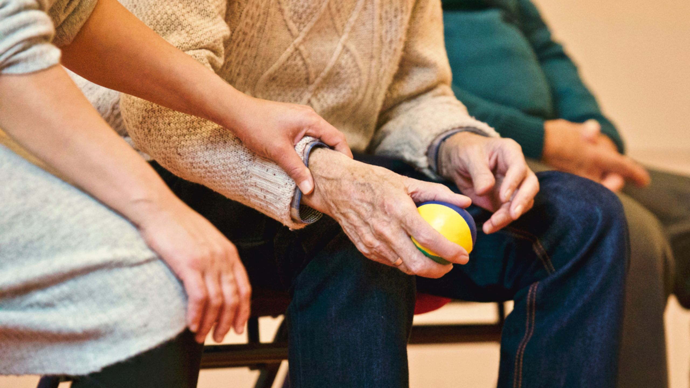
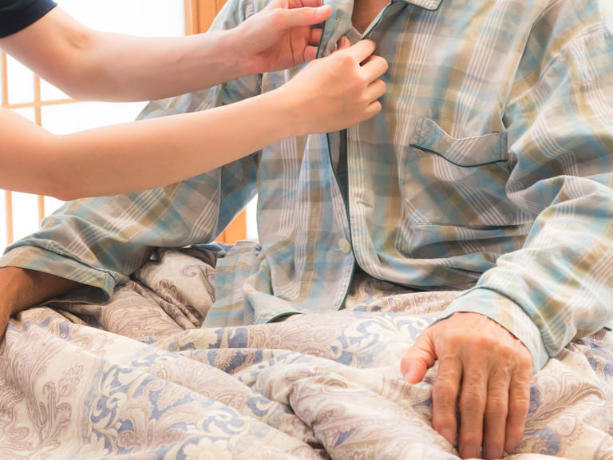
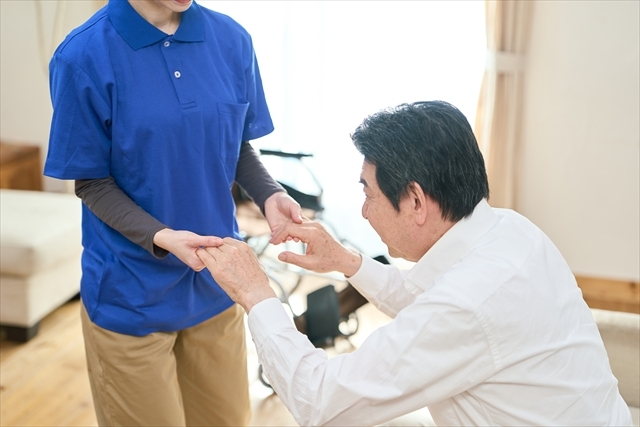
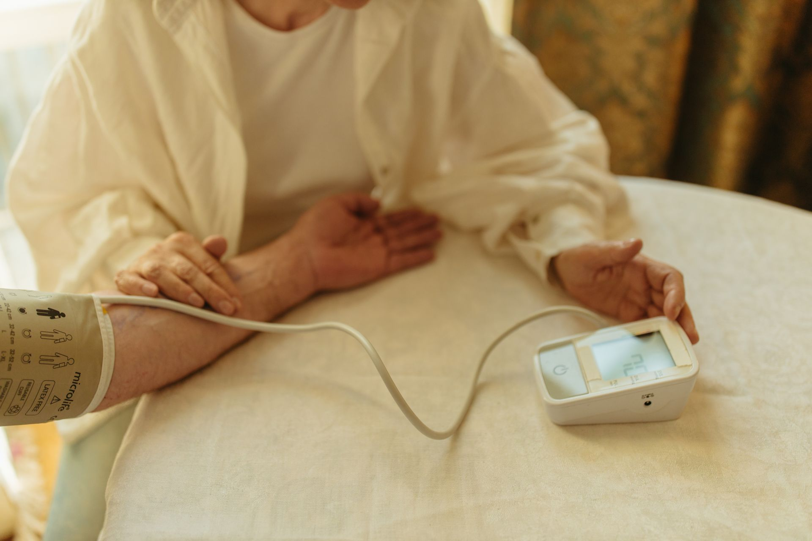

ご利用者様の身体に直接接触して日常生活動作能力(ADL)や意欲の向上のために利用者と共に行い自立できるようサポートいたします。 ホームヘルパーがご自宅を訪問し、入浴・排せつ・食事等や、掃除・洗濯・調理・買物等の家事(身体介護を伴う)の支援を行います。
単身、またはその家族が障がいや病気等のために、ご本人若しくはご家族が家事を行ことが困難な場合に支援いたします。ホームヘルパーがご自宅を訪問し、身体介護以外の掃除・洗濯・調理・買物などの日常生活上の援助を行います。

常に介護が必要な重い障がいがある方でも、在宅での生活が続けられるようにサポートいたします。重度の肢体不自由や知的障がい、精神障がいがあるなど常に介護を必要とする方のご自宅にホームヘルパーがご自宅を訪問し、入浴・排せつ・食事などの生活サポート、調理・洗濯・掃除などの家事サポート、日々の生活全般にわたる援助や外出時における移動中の介護を総合的に行います。

単独で外出をすることが困難な障がい者や障がい児の方が外出する場合に、ヘルパーが付き添い移動のサポートをいたします。自宅周辺や特定の目的地への往復などの散策、自宅からリハビリセンターへの往復、小学校・中学校・高等学校などへの通学、 通所施設など社会福祉施設への通所や学童保育所・トワイライトスクール・放課後等デイサービスへの通所、さらに余暇活動としてのお出かけの際にもご利用いただけます。
行動に著しい困難を有する知的障がいや精神障がいのある方が、行動する際に生じ得る危険を回避するために必要な援護、外出時における移動中の介護、排せつ、食事等の介護のほか、行動する際に必要な援助を行います。障がいの特性を理解した専門のヘルパーがこれらのサービスを行い、知的障がいや精神障がいのある方の社会参加と地域生活を支援します。

医療的ケアとは、日常必要とされる呼吸・栄養摂取・排泄などに関わる医療的な生活援助行為のことです。条件を満たせば介護福祉士、または一定の研修を受けた介護職員なども行うことができます。